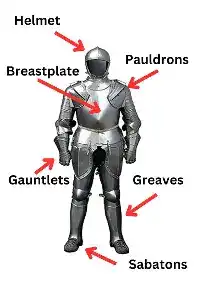

Medieval armor was composed of many specialized parts, each designed to protect a specific area of the body.
- Helmet: Protected the head; styles included bascinet, sallet and great helm.
- Pauldrons: Shielded the shoulder and upper arm.
- Breastplate: Covered the chest and torso.
- Gauntlets: Armored gloves for the hands.
- Greaves: Protected the lower legs.
- Sabaton: Metal shoes for the feet.